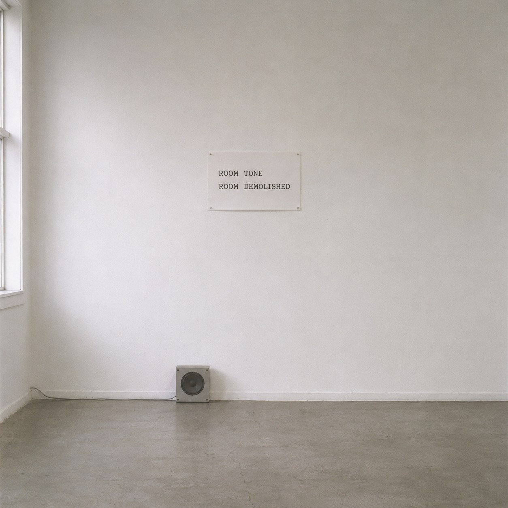
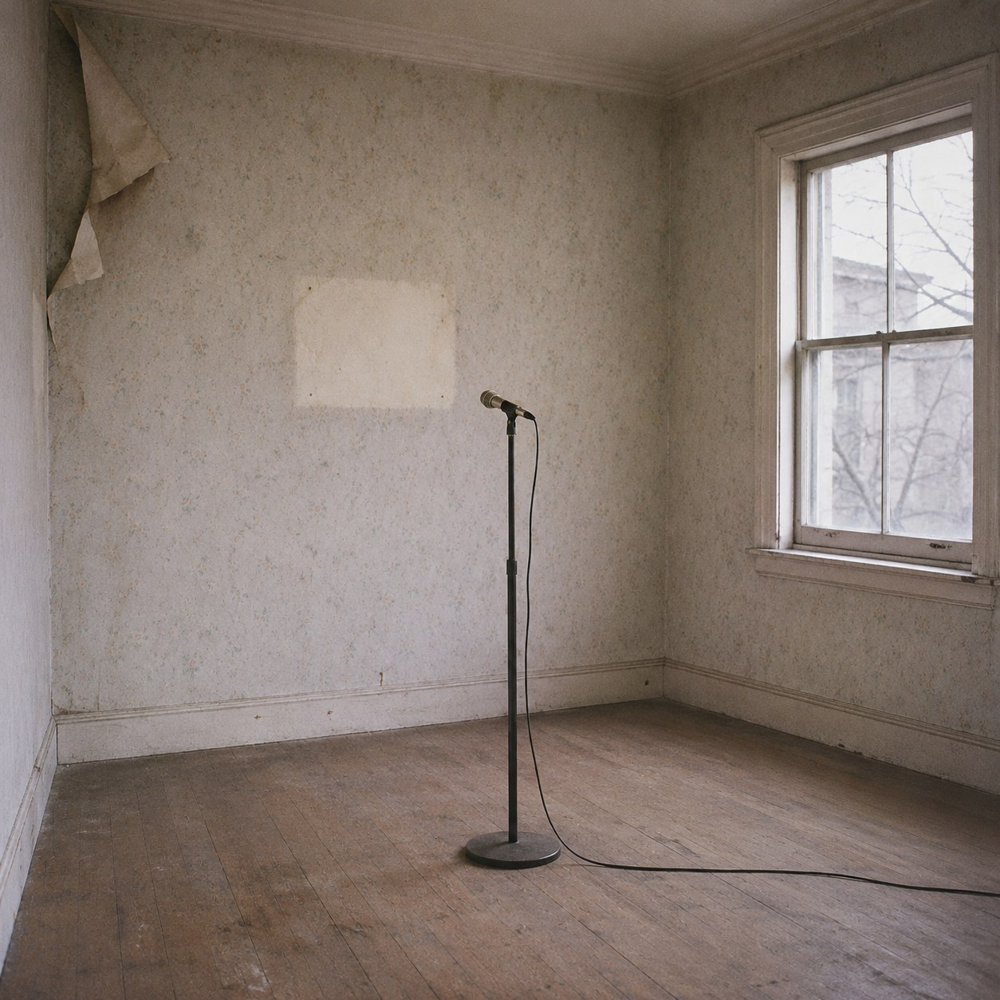

The Quiet Remains


Every room has a silence of its own. People who record sound for films know this. Before they leave a place, they ask everyone to stand still and record a minute of the empty room, so they can patch the gaps between words later. A minute from one room will not fit another. The hum is wrong. The air is wrong. Silence has an address.
This minute was recorded in a room that has since been pulled down. The walls are rubble now. The window is gone. What is left is sixty seconds of that room holding still. It plays from a small speaker in a white room that has a silence of its own, so for one minute two quiets lie on top of each other, and only one of them has a place to stand.
John Cage showed that silence is never empty. Sit still and the room fills up with what was always there. Here the room is not there. Its silence came loose and outlived it.
Rachel Whiteread cast the inside of a house in concrete, and it stood in East London until it was knocked down too. She kept the space. This keeps the stillness, which weighs nothing and takes up no ground.
Listen closely and you hear almost nothing. That almost is the room.